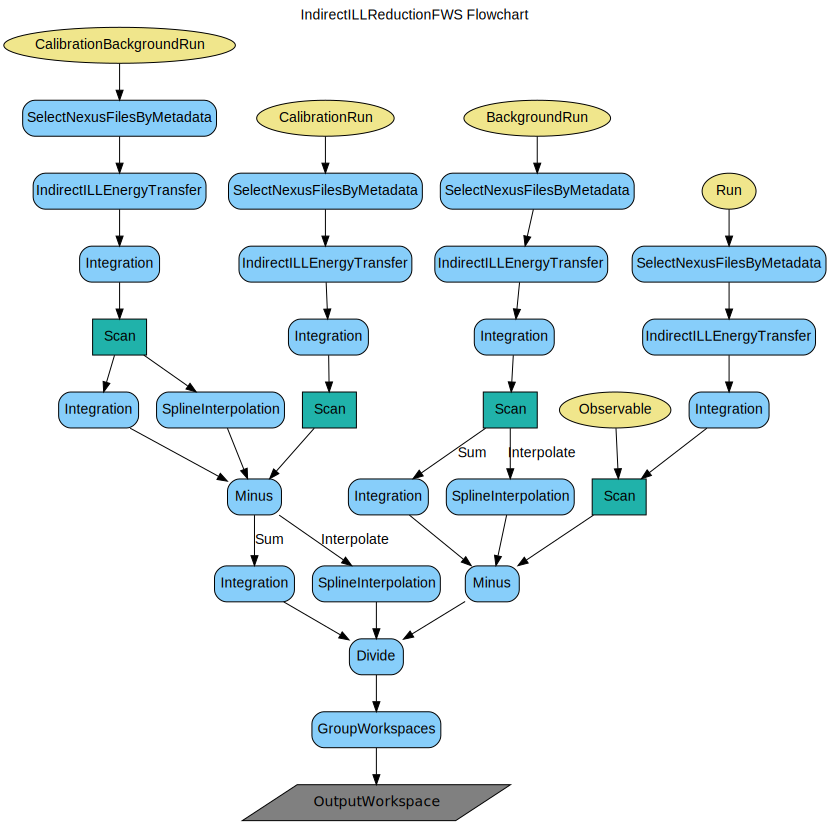

\(\renewcommand\AA{\unicode{x212B}}\)
IndirectILLReductionFWS v1¶

IndirectILLReductionFWS dialog.¶
Summary¶
Performs fixed-window scan (FWS) multiple file reduction (both elastic and inelastic) for ILL indirect geometry data, instrument IN16B.
See Also¶
Properties¶
Name |
Direction |
Type |
Default |
Description |
|---|---|---|---|---|
Run |
Input |
list of str lists |
Mandatory |
Run number(s) of sample run(s). Allowed values: [‘nxs’] |
BackgroundRun |
Input |
list of str lists |
Run number(s) of background (empty can) run(s). Allowed values: [‘nxs’] |
|
CalibrationRun |
Input |
list of str lists |
Run number(s) of vanadium calibration run(s). Allowed values: [‘nxs’] |
|
CalibrationBackgroundRun |
Input |
list of str lists |
Run number(s) of background (empty can) run(s) for vanadium run. Allowed values: [‘nxs’] |
|
Observable |
Input |
string |
sample.temperature |
Scanning observable, a Sample Log entry |
SortXAxis |
Input |
boolean |
False |
Whether or not to sort the x-axis |
BackgroundScalingFactor |
Input |
number |
1 |
Scaling factor for background subtraction |
CalibrationBackgroundScalingFactor |
Input |
number |
1 |
Scaling factor for background subtraction for vanadium calibration |
BackgroundOption |
Input |
string |
Sum |
Whether to sum or interpolate the background runs. Allowed values: [‘Sum’, ‘Interpolate’] |
CalibrationOption |
Input |
string |
Sum |
Whether to sum or interpolate the calibration runs. Allowed values: [‘Sum’, ‘Interpolate’] |
CalibrationBackgroundOption |
Input |
string |
Sum |
Whether to sum or interpolate the background run for calibration runs. Allowed values: [‘Sum’, ‘Interpolate’] |
MapFile |
Input |
string |
Filename of the detector grouping map file to use. By default all the pixels will be summed per each tube. Use .map or .xml file (see GroupDetectors documentation) only if different range is needed for each tube. Allowed values: [‘map’, ‘xml’] |
|
ManualPSDIntegrationRange |
Input |
long list |
1,128 |
Integration range of vertical pixels in each PSD tube. By default all the pixels will be summed per each tube. Use this option if the same range (other than default) is needed for all the tubes. |
Analyser |
Input |
string |
silicon |
Analyser crystal. Allowed values: [‘silicon’] |
Reflection |
Input |
string |
111 |
Analyser reflection. Allowed values: [‘111’, ‘311’] |
OutputWorkspace |
Output |
WorkspaceGroup |
Mandatory |
Output workspace group |
SpectrumAxis |
Input |
string |
SpectrumNumber |
The spectrum axis conversion target. Allowed values: [‘SpectrumNumber’, ‘2Theta’, ‘Q’, ‘Q2’] |
DiscardSingleDetectors |
Input |
boolean |
False |
Whether to discard the spectra of single detectors. |
ManualInelasticPeakChannels |
Input |
long list |
-1,-1 |
The channel indices for the inelastic peak positions in the beginning and in the end of the spectra; by default the maxima of the monitor spectrum will be used for this. The intensities will be integrated symmetrically around each peak. |
GroupDetectors |
Input |
boolean |
True |
Group the pixels using the range, tube-by-tube (default) or in a custom way; it is not recommended to group the detectors at this stage, in order to get absorption corrections right, however the default value is True for backwards compatibility. |
Description¶
This algorithm performs Fixed Window Scan (FWS) data reduction (both Elastic and Inelastic) for IN16B indirect geometry instrument at ILL. It uses internally the IndirectILLEnergyTransfer algorithm.
Input¶
Multiple files following the syntax given in
MultipleFileProperty.
Output¶
A WorkspaceGroup that contains as many workspaces as many distinct Doppler’s energy values were present in input files list (including E=0 for EFWS).
Each Workspace in the group will have the given observable as the x-axis and as many bins, as many files were given corresponding to the same energy.
Y-axis will be detector angle, and the values would be the intensities integrated over the whole spectra (for EFWS) or over the two peaks
(symmetric around each peak) at the beginning and the end of the spectra (for IFWS).
Scanning observable can be any numeric or time-stamp-like string parameter.
See sample.* or e.g. start_time in Sample Logs.
BackgroundRun s, CalibrationBackgroundRun s and CalibrationRun s will be averaged (default) or interpolated over all the observable points according to the option.
Interpolation is provided by SplineInterpolation, which does cubic spline (or linear for 2 points only) interpolation inside the range and
flat extrapolation beyond the range. For the moment it does not give errors on interpolated results.
Interpolated subtraction or calibration is recommended only if there is a strong dependence on the observable and many measured points in the data to be interpolated.
Workflow¶
Usage¶
Example: EFWS+IFWS
ws = IndirectILLReductionFWS(Run='ILL/IN16B/083072:083077.nxs')
print("Result is now a WorkspaceGroup, which has {:d} workspaces, one per each energy value".format( ws.getNumberOfEntries()))
print("first item, called {} corresponds to energy value of {}".format(
ws.getItem(0).name(),ws.getItem(0).name().split('_')[1]))
print("it has {:d} histograms and {:d} bins, one per each temperature".format(
ws.getItem(0).getNumberHistograms(),ws.getItem(0).blocksize()))
Output:
Result is now a WorkspaceGroup, which has 3 workspaces, one per each energy value
first item, called ws_0.0_red corresponds to energy value of 0.0
it has 18 histograms and 2 bins, one per each temperature
Categories: AlgorithmIndex | Workflow\MIDAS | Workflow\Inelastic | Inelastic\Indirect | Inelastic\Reduction | ILL\Indirect
Source¶
Python: IndirectILLReductionFWS.py